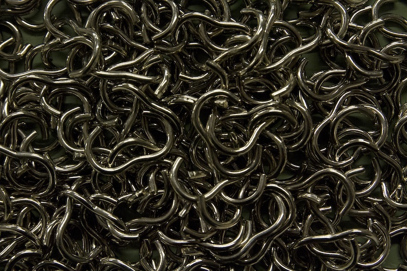
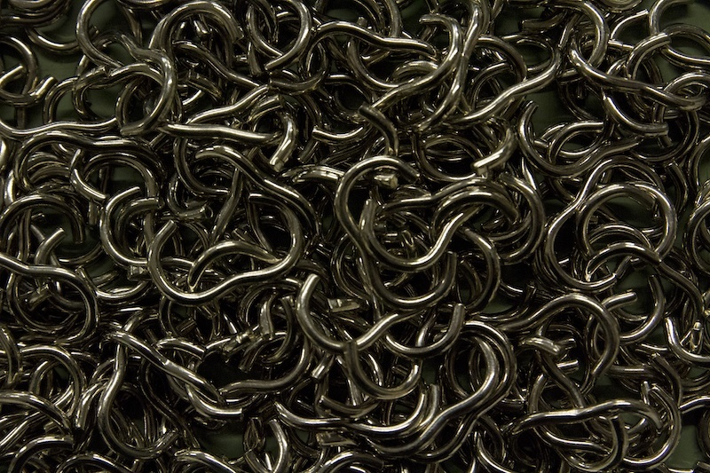

Twisted o-rings, twisted o rings, or Quick Connect belts
Twisted o-rings are commonly referred to as twisted o rings, quick connect belts, temp bands and cloth twisted o ring.
Twisted o-rings are an excellent alternative to polyurethane belts for lineshaft conveyors, roller to roller conveyors, or transfer belts in the material handling industry.
These belts also known as “bands” are used instead of polyurethane belts because they utilize a hook and loop system. This “quick connect” allows you to replace your bands without breaking down your conveyor system. Which results in virtually zero downtime so more product can out the door. Typically, when a polyurethane belt needs to be replaced this means the conveyor system needs to be shut down for hours completely stopping productivity. The fastest and easiest way to eliminate this is to use twisted o-rings.
There are two types of twisted o-rings or twisted o rings on the market. We manufacture a rope twisted o-ring and also offer the twisted poly o ring that is on the market. The two have completely different uses.
The poly twisted o-ring is as it sounds is made from polyurethane. It is not intended to stretch and return to its original form. It has a very difficult steel hook that is hard to hook through the loop and it is not very good with changes in temperature. Its typical life span is usually 90 days. The advantages of this poly twisted o-ring is that it is easy to install. It is a great product to use if you are trying to just keep your system going until it is time to do scheduled maintenance and install polyurethane belts. We sell thousands of these poly twisted o-rings and they are great for a temporary fix.
The second type of twisted o-ring is made from cotton with an elastic core. Our rope twisted o-rings are a very new product on the market. They work exactly like the poly twisted o-rings with several exceptions:
- Our rope twisted o-rings stretch 32%. This gives them more elasticity and more pulling power- great for areas such as curves that constantly have failing polyurethane belts.
- These rope twisted o-rings will be shorter than your actually size due to their stretch. This is normal.
- Our rope twisted o-rings last 10-14 months!!!! Instead of being a temporary fix until scheduled maintenance to change your polyurethane belts this becomes a permanent solution. No more breaking apart conveyors ever.
- The rope elastic material does not freeze on our rope twisted o-rings. Temperature adjustments will not affect them.
- We make them in any length and diameter so they can be used on your pop up diverters and on your transfer applications.
The only issue with our rope twisted o-rings is getting the proper size. If there is a mismeasurement the bands can pop either in the first two weeks or in the first three months. Not to worry, we guarantee or rope twisted o-rings with a 100% money back guarantee and we keep all sizes in stock to overnight the correct size at no charge to you if there was a mismeasurement.
We are here to make your conveyors run easier with less downtime. We also will do surveys at no charge to. We will come out to your facility to see how we can help your facility run more efficiently.

 
